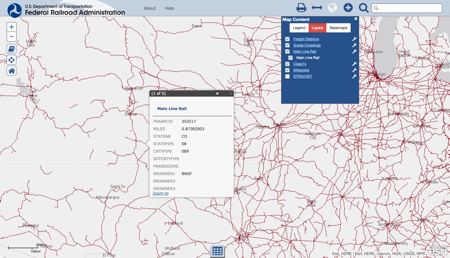
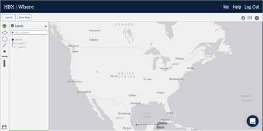

Improving Web GIS Usability
I am currently a lead software engineer at HBK Engineering, LLC, a civil engineering company which focuses on utility engineering. My job duties primarily involve developing and maintaining a web-based geographic information system (Figure 1) which is used by various stakeholders within and external to the company.
 Figure 1 - Screenshot of existing GIS system
Figure 1 - Screenshot of existing GIS system
My semester project for this class will consist of exploring the idea of making several notable modifications to this application and evaluating user responses to those modifications. I emphasize “exploring”, as some changes may not be approved for production use.
Background
At its core, the aforementioned web application allows users to organize, author, and review geographic content and associated files and metadata. Application content is heterogeneous: it may be derived from ESRI data sources, a Mongo database, or spreadsheets. Built on top of the core functionality are features for search, data import and export, and basic geospatial querying. As with any application, there is also some administrative functionality.
There are a relatively small number of users of the application. In a company of roughly 450 individuals, there are approximately 100 monthly active users and 30 daily active users. Aside from administrators, there are three general types of users of the application, profiled in the following section.
User Stories
Daphne
Daphne is a 26-year-old civil engineer. She works on a variety of projects within the company. Though she’s generally tech-savvy, she gets really frustrated when applications she uses don’t work as she expects. One of her tasks one week was to enter the geographies, attributes, and files for thirty different records into the system. Although she knew where to get all of the information for each record, she got frustrated at how many steps it took to save each record. She even lost a few records because they were only saved in her session, even though they looked like they’d been saved to the server. This cost her extra time and required her to stay late one night.
Mark
Mark is a 53-year-old utility locator. His job entails working outdoors using a rugged laptop. He’s accustomed to some level of technology at work, but it’s not something that comes easily for him. After returning from an extended vacation in January, he found himself assigned to an unfamiliar area to cover for someone else on vacation. He needed to freshly download detailed drawings stored on the system for this new area, but this cost him quite a bit of time as he had to select each individual asset to download the files.
Jim
Jim is a 47-year-old sales manager. He’s a high-energy guy who always seems to be on-the-go. Although he generally works out of the office, he often travels to various clients and potential clients to run meetings and presentations. Most client offices have laptop hookups in their meeting rooms, but some do not have reliable internet connections. Jim likes to use the GIS application in sales pitches, but often just takes screenshots rather than risk not being able to load data for the presentation. When he does give a presentation with the application, the presentation screen is sometimes cluttered with extraneous information from the application which is confusing to meeting attendees.
Goals
These users encountered several problems as they worked with the system. Daphne was frustrated by the inefficiency of the system and with how it did not completely match her mental expectation for when content was “saved”. Mark was again inconvenienced by the inefficiency of the system, and may occasionally be confused by the number of available functions in the system. Jim does not find the system to be flexible or reliable enough for use in presentations. Potential clients who see the system may be confused by some of the clutter.
Over the course of this project, I hope to correct some or all of these problems, by focusing on emphasizing “popular” functions used by content authors (like Daphne) and consumers (like Mark). I am also hoping to improve the presentation experience for users like Jim.
Related Work
There are several well-known interfaces for interacting with geospatial information. Among these are Google Earth, ESRI (Figure 2), and CartoDB (Figure 3). Each offers a slightly different philosophy regarding interface layout and overall experience. Additionally, a colleague that I work with has developed some conceptual wireframes (Figure 4) which may be a good reference point, as well.
 Figure 2 - Screenshot of ESRI web map
 Figure 3 - Screenshot of CartoDB application
Figure 3 - Screenshot of CartoDB application
 Figure 4 - GIS application wireframe
As far as formal research is concerned, much of it seems to focus on geospatial usage on small screens and handheld devices or table tops rather than full-sized workstation displays or large wall-mounted displays. One article which evaluates interface alternatives for geospatial systems is “Multimodal Interactive Maps: Designing for Human Performance” [1]. The focus on that article is on speech-driven input, which may be beneficial to this project.
Methods
To collect requirements for this project, a survey and possibly some user interviews will be used, including consultation with “expert” users. Although it may be possible to instrument our application to retrieve timing information and other analytics for some use cases, it may not be feasible given the short project timeline and limited user base.
Once requirements have been gathered, we will evaluate alternatives by prototyping them and presenting to an expert or even performing A/B testing in production amongst trusted users. It should be noted that the development and evaluation options may be constrained by development resources and organizational limitations, unfortunately.
References
- Oviatt, Sharon. “Multimodal interactive maps: designing for human performance.” Human-Computer Interaction 12.1 (1997): 93-129.